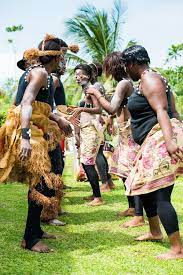

Suas tradições culinárias, costumes, alimentos e pratos sofrem grande influência da culinária francesa e várias especialidades francesas também são oferecidas nas grandes cidades. Nas áreas rurais, alimentos básicos como mandioca, arroz e inhame são geralmente usados. As carnes disponíveis incluem frango e peixe, bem como carnes selvagens como antílope, javali e macaco. Os temperos são usados com frequência como exemplo temos pasta de pimenta vermelha quente. As frutas incluem banana, mamão, goiaba, manga, abacaxi, coco, abacate e bamendoim, mas as bananas, tomates, milho e berinjelas também são usados.
Algumas comidas típicas como: mandioca, coco, muamba de frango, frango nyembwe.
A música do Gabão inclui vários estilos populares e pop. A artista pop gabonesa, Patience Dabany, que agora vive nos EUA, produz álbuns gravados em Los Angeles com um elemento distintamente gabonês; eles são populares em toda a África francófona. Outros músicos incluem os guitarristas Georges Oyendze, La Rose Mbadou e Sylvain Avara, e o cantor Oliver N'Goma. O rock e o hip hop importados dos EUA e do Reino Unido são populares no Gabão, assim como o rumba, o makossa e o soukous. O hino nacional do Gabão é "La Concorde", escrito e composto por Georges Aleka Damas e adotado em 1960 após a independência.
Patience Dabany|Georges Aleka
|  | A população do Gabão, estimada em 1.640.286, dos quais 42% são menores (julho de 2013 est.), incluem quatro grandes agrupamentos: os Bantu; os Fang, os Punu, os Nzebi e os Obamba. O Gabão, para o etnógrafo francês Barabe, "é para a África o que o Tibete é para a Ásia, o centro espiritual das iniciações religiosas", devido à música sacra do Bwiti, a doutrina religiosa dominante do país, atribuída aos Fang e os Mitsogho, que envolve o uso da iboga. Instrumentos folclóricos do Gabão incluem o obala . |